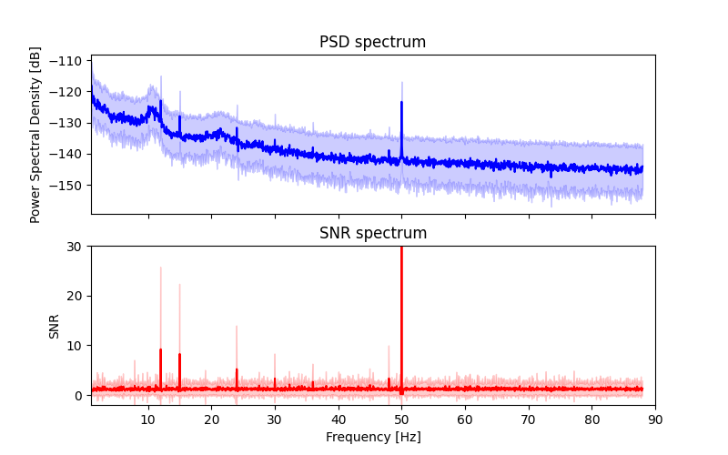
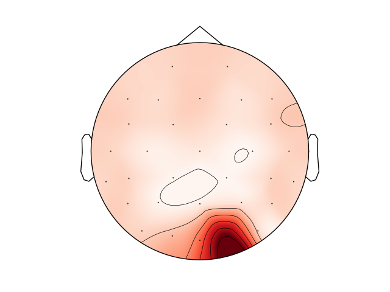
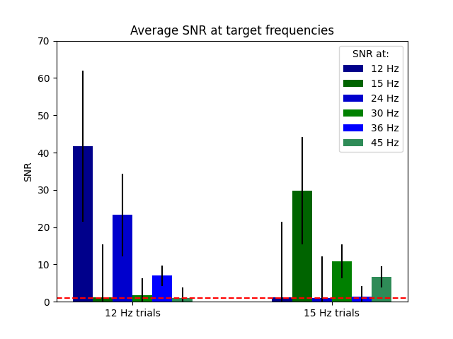
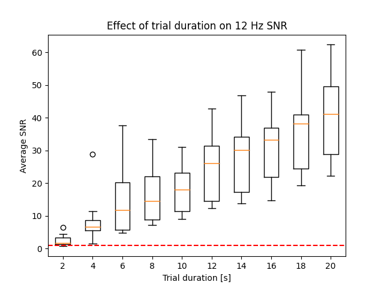
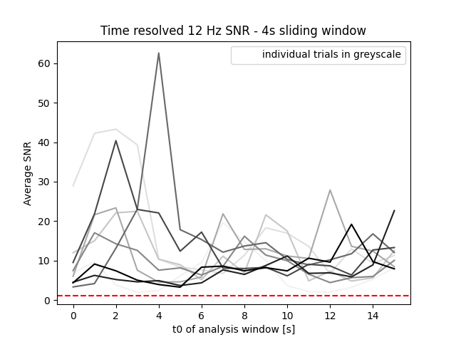

Note
Click here to download the full example code
Frequency-tagging: Basic analysis of an SSVEP/vSSR dataset¶
In this tutorial we compute the frequency spectrum and quantify signal-to-noise ratio (SNR) at a target frequency in EEG data recorded during fast periodic visual stimulation (FPVS) at 12 Hz and 15 Hz in different trials. Extracting SNR at stimulation frequency is a simple way to quantify frequency tagged responses in MEEG (a.k.a. steady state visually evoked potentials, SSVEP, or visual steady-state responses, vSSR in the visual domain, or auditory steady-state responses, ASSR in the auditory domain).
For a general introduction to the method see Norcia et al. (2015) for the visual domain, and Picton et al. (2003) for the auditory domain.
Data and outline:
We use a simple example dataset with frequency tagged visual stimulation: N=2 participants observed checkerboard patterns inverting with a constant frequency of either 12.0 Hz of 15.0 Hz. 32 channels wet EEG was recorded. (see SSVEP for more information).
We will visualize both the power-spectral density (PSD) and the SNR spectrum of the epoched data, extract SNR at stimulation frequency, plot the topography of the response, and statistically separate 12 Hz and 15 Hz responses in the different trials. Since the evoked response is mainly generated in early visual areas of the brain the statistical analysis will be carried out on an occipital ROI.
Outline
# Authors: Dominik Welke <dominik.welke@web.de>
# Evgenii Kalenkovich <e.kalenkovich@gmail.com>
#
# License: BSD (3-clause)
import matplotlib.pyplot as plt
import mne
import numpy as np
from scipy.stats import ttest_rel
Data preprocessing¶
Due to a generally high SNR in SSVEP/vSSR, typical preprocessing steps are considered optional. This doesn’t mean, that a proper cleaning would not increase your signal quality!
Raw data have FCz reference, so we will apply common-average rereferencing.
We will apply a 0.1 highpass filter.
Lastly, we will cut the data in 20 s epochs corresponding to the trials.
# Load raw data
data_path = mne.datasets.ssvep.data_path()
bids_fname = data_path + '/sub-02/ses-01/eeg/sub-02_ses-01_task-ssvep_eeg.vhdr'
raw = mne.io.read_raw_brainvision(bids_fname, preload=True, verbose=False)
raw.info['line_freq'] = 50.
# Set montage
montage = mne.channels.make_standard_montage('easycap-M1')
raw.set_montage(montage, verbose=False)
# Set common average reference
raw.set_eeg_reference('average', projection=False, verbose=False)
# Apply bandpass filter
raw.filter(l_freq=0.1, h_freq=None, fir_design='firwin', verbose=False)
# Construct epochs
event_id = {
'12hz': 255,
'15hz': 155
}
events, _ = mne.events_from_annotations(raw, verbose=False)
raw.info["events"] = events
tmin, tmax = -1., 20. # in s
baseline = None
epochs = mne.Epochs(
raw, events=events,
event_id=[event_id['12hz'], event_id['15hz']], tmin=tmin,
tmax=tmax, baseline=baseline, verbose=False)
Frequency analysis¶
Now we compute the frequency spectrum of the EEG data. You will already see the peaks at the stimulation frequencies and some of their harmonics, without any further processing.
The ‘classical’ PSD plot will be compared to a plot of the SNR spectrum. SNR will be computed as a ratio of the power in a given frequency bin to the average power in its neighboring bins. This procedure has two advantages over using the raw PSD:
it normalizes the spectrum and accounts for 1/f power decay.
power modulations which are not very narrow band will disappear.
Calculate power spectral density (PSD)¶
The frequency spectrum will be computed using Fast Fourier transform (FFT). This seems to be common practice in the steady-state literature and is based on the exact knowledge of the stimulus and the assumed response - especially in terms of it’s stability over time. For a discussion see e.g. Bach & Meigen (1999)
We will exclude the first second of each trial from the analysis:
steady-state response often take a while to stabilize, and the transient phase in the beginning can distort the signal estimate.
this section of data is expected to be dominated by responses related to the stimulus onset, and we are not interested in this.
In MNE we call plain FFT as a special case of Welch’s method, with only a single Welch window spanning the entire trial and no specific windowing function (i.e. applying a boxcar window).
Calculate signal to noise ratio (SNR)¶
SNR - as we define it here - is a measure of relative power: it’s the ratio of power in a given frequency bin - the ‘signal’ - to a ‘noise’ baseline - the average power in the surrounding frequency bins. This approach was initially proposed by Meigen & Bach (1999)
Hence, we need to set some parameters for this baseline - how many neighboring bins should be taken for this computation, and do we want to skip the direct neighbors (this can make sense if the stimulation frequency is not super constant, or frequency bands are very narrow).
The function below does what we want.
def snr_spectrum(psd, noise_n_neighbor_freqs=1, noise_skip_neighbor_freqs=1):
"""Compute SNR spectrum from PSD spectrum using convolution.
Parameters
----------
psd : ndarray, shape ([n_trials, n_channels,] n_frequency_bins)
Data object containing PSD values. Works with arrays as produced by
MNE's PSD functions or channel/trial subsets.
noise_n_neighbor_freqs : int
Number of neighboring frequencies used to compute noise level.
increment by one to add one frequency bin ON BOTH SIDES
noise_skip_neighbor_freqs : int
set this >=1 if you want to exclude the immediately neighboring
frequency bins in noise level calculation
Returns
-------
snr : ndarray, shape ([n_trials, n_channels,] n_frequency_bins)
Array containing SNR for all epochs, channels, frequency bins.
NaN for frequencies on the edges, that do not have enough neighbors on
one side to calculate SNR.
"""
# Construct a kernel that calculates the mean of the neighboring
# frequencies
averaging_kernel = np.concatenate((
np.ones(noise_n_neighbor_freqs),
np.zeros(2 * noise_skip_neighbor_freqs + 1),
np.ones(noise_n_neighbor_freqs)))
averaging_kernel /= averaging_kernel.sum()
# Calculate the mean of the neighboring frequencies by convolving with the
# averaging kernel.
mean_noise = np.apply_along_axis(
lambda psd_: np.convolve(psd_, averaging_kernel, mode='valid'),
axis=-1, arr=psd
)
# The mean is not defined on the edges so we will pad it with nas. The
# padding needs to be done for the last dimension only so we set it to
# (0, 0) for the other ones.
edge_width = noise_n_neighbor_freqs + noise_skip_neighbor_freqs
pad_width = [(0, 0)] * (mean_noise.ndim - 1) + [(edge_width, edge_width)]
mean_noise = np.pad(
mean_noise, pad_width=pad_width, constant_values=np.nan
)
return psd / mean_noise
Now we call the function to compute our SNR spectrum.
As described above, we have to define two parameters.
how many noise bins do we want?
do we want to skip the n bins directly next to the target bin?
Tweaking these parameters can drastically impact the resulting spectrum, but mainly if you choose extremes. E.g. if you’d skip very many neighboring bins, broad band power modulations (such as the alpha peak) should reappear in the SNR spectrum. On the other hand, if you skip none you might miss or smear peaks if the induced power is distributed over two or more frequency bins (e.g. if the stimulation frequency isn’t perfectly constant, or you have very narrow bins).
Here, we want to compare power at each bin with average power of the three neighboring bins (on each side) and skip one bin directly next to it.
Plot PSD and SNR spectra¶
Now we will plot grand average PSD (in blue) and SNR (in red) ± sd for every frequency bin. PSD is plotted on a log scale.
fig, axes = plt.subplots(2, 1, sharex='all', sharey='none', figsize=(8, 5))
freq_range = range(np.where(np.floor(freqs) == 1.)[0][0],
np.where(np.ceil(freqs) == fmax - 1)[0][0])
psds_plot = 10 * np.log10(psds)
psds_mean = psds_plot.mean(axis=(0, 1))[freq_range]
psds_std = psds_plot.std(axis=(0, 1))[freq_range]
axes[0].plot(freqs[freq_range], psds_mean, color='b')
axes[0].fill_between(
freqs[freq_range], psds_mean - psds_std, psds_mean + psds_std,
color='b', alpha=.2)
axes[0].set(title="PSD spectrum", ylabel='Power Spectral Density [dB]')
# SNR spectrum
snr_mean = snrs.mean(axis=(0, 1))[freq_range]
snr_std = snrs.std(axis=(0, 1))[freq_range]
axes[1].plot(freqs[freq_range], snr_mean, color='r')
axes[1].fill_between(
freqs[freq_range], snr_mean - snr_std, snr_mean + snr_std,
color='r', alpha=.2)
axes[1].set(
title="SNR spectrum", xlabel='Frequency [Hz]',
ylabel='SNR', ylim=[-2, 30], xlim=[fmin, fmax])
fig.show()

You can see that the peaks at the stimulation frequencies (12 Hz, 15 Hz) and their harmonics are visible in both plots (just as the line noise at 50 Hz). Yet, the SNR spectrum shows them more prominently as peaks from a noisy but more or less constant baseline of SNR = 1. You can further see that the SNR processing removes any broad-band power differences (such as the increased power in alpha band around 10 Hz), and also removes the 1/f decay in the PSD.
Note, that while the SNR plot implies the possibility of values below 0 (mean minus sd) such values do not make sense. Each SNR value is a ratio of positive PSD values, and the lowest possible PSD value is 0 (negative Y-axis values in the upper panel only result from plotting PSD on a log scale). Hence SNR values must be positive and can minimally go towards 0.
Extract SNR values at the stimulation frequency¶
Our processing yielded a large array of many SNR values for each trial x channel x frequency-bin of the PSD array.
For statistical analysis we obviously need to define specific subsets of this array. First of all, we are only interested in SNR at the stimulation frequency, but we also want to restrict the analysis to a spatial ROI. Lastly, answering your interesting research questions will probably rely on comparing SNR in different trials.
Therefore we will have to find the indices of trials, channels, etc. Alternatively, one could subselect the trials already at the epoching step, using MNE’s event information, and process different epoch structures separately.
Let’s only have a look at the trials with 12 Hz stimulation, for now.
# define stimulation frequency
stim_freq = 12.
Get index for the stimulation frequency (12 Hz)¶
Ideally, there would be a bin with the stimulation frequency exactly in its center. However, depending on your Spectral decomposition this is not always the case. We will find the bin closest to it - this one should contain our frequency tagged response.
# find index of frequency bin closest to stimulation frequency
i_bin_12hz = np.argmin(abs(freqs - stim_freq))
# could be updated to support multiple frequencies
# for later, we will already find the 15 Hz bin and the 1st and 2nd harmonic
# for both.
i_bin_24hz = np.argmin(abs(freqs - 24))
i_bin_36hz = np.argmin(abs(freqs - 36))
i_bin_15hz = np.argmin(abs(freqs - 15))
i_bin_30hz = np.argmin(abs(freqs - 30))
i_bin_45hz = np.argmin(abs(freqs - 45))
Get indices for the different trial types¶
i_trial_12hz = np.where(epochs.events[:, 2] == event_id['12hz'])[0]
i_trial_15hz = np.where(epochs.events[:, 2] == event_id['15hz'])[0]
Get indices of EEG channels forming the ROI¶
# Define different ROIs
roi_vis = ['POz', 'Oz', 'O1', 'O2', 'PO3', 'PO4', 'PO7',
'PO8', 'PO9', 'PO10', 'O9', 'O10'] # visual roi
# Find corresponding indices using mne.pick_types()
picks_roi_vis = mne.pick_types(epochs.info, eeg=True, stim=False,
exclude='bads', selection=roi_vis)
Apply the subset, and check the result¶
Now we simply need to apply our selection and yield a result. Therefore, we typically report grand average SNR over the subselection.
In this tutorial we don’t verify the presence of a neural response. This is commonly done in the ASSR literature where SNR is often lower. An F-test or Hotelling T² would be appropriate for this purpose.
snrs_target = snrs[i_trial_12hz, :, i_bin_12hz][:, picks_roi_vis]
print("sub 2, 12 Hz trials, SNR at 12 Hz")
print(f'average SNR (occipital ROI): {snrs_target.mean()}')
Out:
sub 2, 12 Hz trials, SNR at 12 Hz
average SNR (occipital ROI): 41.6936554171862
Topography of the vSSR¶
But wait… As described in the intro, we have decided a priori to work with average SNR over a subset of occipital channels - a visual region of interest (ROI) - because we expect SNR to be higher on these channels than in other channels.
Let’s check out, whether this was a good decision!
Here we will plot average SNR for each channel location as a topoplot. Then we will do a simple paired T-test to check, whether average SNRs over the two sets of channels are significantly different.
# get average SNR at 12 Hz for ALL channels
snrs_12hz = snrs[i_trial_12hz, :, i_bin_12hz]
snrs_12hz_chaverage = snrs_12hz.mean(axis=0)
# plot SNR topography
fig, ax = plt.subplots(1)
mne.viz.plot_topomap(snrs_12hz_chaverage, epochs.info, vmin=1., axes=ax)
print("sub 2, 12 Hz trials, SNR at 12 Hz")
print("average SNR (all channels): %f" % snrs_12hz_chaverage.mean())
print("average SNR (occipital ROI): %f" % snrs_target.mean())
tstat_roi_vs_scalp = \
ttest_rel(snrs_target.mean(axis=1), snrs_12hz.mean(axis=1))
print("12 Hz SNR in occipital ROI is significantly larger than 12 Hz SNR over "
"all channels: t = %.3f, p = %f" % tstat_roi_vs_scalp)

Out:
sub 2, 12 Hz trials, SNR at 12 Hz
average SNR (all channels): 16.985902
average SNR (occipital ROI): 41.693655
12 Hz SNR in occipital ROI is significantly larger than 12 Hz SNR over all channels: t = 6.950, p = 0.000067
We can see, that 1) this participant indeed exhibits a cluster of channels with high SNR in the occipital region and 2) that the average SNR over all channels is smaller than the average of the visual ROI computed above. The difference is statistically significant. Great!
Such a topography plot can be a nice tool to explore and play with your data - e.g. you could try how changing the reference will affect the spatial distribution of SNR values.
However, we also wanted to show this plot to point at a potential problem with frequency-tagged (or any other brain imaging) data: there are many channels and somewhere you will likely find some statistically significant effect. It is very easy - even unintended - to end up double-dipping or p-hacking. So if you want to work with an ROI or individual channels, ideally select them a priori - before collecting or looking at the data - and preregister this decision so people will believe you. If you end up selecting an ROI or individual channel for reporting because this channel or ROI shows an effect, e.g. in an explorative analysis, this is also fine but make it transparently and correct for multiple comparison.
Statistical separation of 12 Hz and 15 Hz vSSR¶
After this little detour into open science, let’s move on and do the analyses we actually wanted to do:
We will show that we can easily detect and discriminate the brains responses in the trials with different stimulation frequencies.
In the frequency and SNR spectrum plot above, we had all trials mixed up. Now we will extract 12 and 15 Hz SNR in both types of trials individually, and compare the values with a simple t-test. We will also extract SNR of the 1st and 2nd harmonic for both stimulation frequencies. These are often reported as well and can show interesting interactions.
snrs_roi = snrs[:, picks_roi_vis, :].mean(axis=1)
freq_plot = [12, 15, 24, 30, 36, 45]
color_plot = [
'darkblue', 'darkgreen', 'mediumblue', 'green', 'blue', 'seagreen'
]
xpos_plot = [-5. / 12, -3. / 12, -1. / 12, 1. / 12, 3. / 12, 5. / 12]
fig, ax = plt.subplots()
labels = ['12 Hz trials', '15 Hz trials']
x = np.arange(len(labels)) # the label locations
width = 0.6 # the width of the bars
res = dict()
# loop to plot SNRs at stimulation frequencies and harmonics
for i, f in enumerate(freq_plot):
# extract snrs
stim_12hz_tmp = \
snrs_roi[i_trial_12hz, np.argmin(abs(freqs - f))]
stim_15hz_tmp = \
snrs_roi[i_trial_15hz, np.argmin(abs(freqs - f))]
SNR_tmp = [stim_12hz_tmp.mean(), stim_15hz_tmp.mean()]
# plot (with std)
ax.bar(
x + width * xpos_plot[i], SNR_tmp, width / len(freq_plot),
yerr=np.std(SNR_tmp),
label='%i Hz SNR' % f, color=color_plot[i])
# store results for statistical comparison
res['stim_12hz_snrs_%ihz' % f] = stim_12hz_tmp
res['stim_15hz_snrs_%ihz' % f] = stim_15hz_tmp
# Add some text for labels, title and custom x-axis tick labels, etc.
ax.set_ylabel('SNR')
ax.set_title('Average SNR at target frequencies')
ax.set_xticks(x)
ax.set_xticklabels(labels)
ax.legend(['%i Hz' % f for f in freq_plot], title='SNR at:')
ax.set_ylim([0, 70])
ax.axhline(1, ls='--', c='r')
fig.show()

As you can easily see there are striking differences between the trials. Let’s verify this using a series of two-tailed paired T-Tests.
# Compare 12 Hz and 15 Hz SNR in trials after averaging over channels
tstat_12hz_trial_stim = \
ttest_rel(res['stim_12hz_snrs_12hz'], res['stim_12hz_snrs_15hz'])
print("12 Hz Trials: 12 Hz SNR is significantly higher than 15 Hz SNR"
": t = %.3f, p = %f" % tstat_12hz_trial_stim)
tstat_12hz_trial_1st_harmonic = \
ttest_rel(res['stim_12hz_snrs_24hz'], res['stim_12hz_snrs_30hz'])
print("12 Hz Trials: 24 Hz SNR is significantly higher than 30 Hz SNR"
": t = %.3f, p = %f" % tstat_12hz_trial_1st_harmonic)
tstat_12hz_trial_2nd_harmonic = \
ttest_rel(res['stim_12hz_snrs_36hz'], res['stim_12hz_snrs_45hz'])
print("12 Hz Trials: 36 Hz SNR is significantly higher than 45 Hz SNR"
": t = %.3f, p = %f" % tstat_12hz_trial_2nd_harmonic)
print()
tstat_15hz_trial_stim = \
ttest_rel(res['stim_15hz_snrs_12hz'], res['stim_15hz_snrs_15hz'])
print("15 Hz trials: 12 Hz SNR is significantly lower than 15 Hz SNR"
": t = %.3f, p = %f" % tstat_15hz_trial_stim)
tstat_15hz_trial_1st_harmonic = \
ttest_rel(res['stim_15hz_snrs_24hz'], res['stim_15hz_snrs_30hz'])
print("15 Hz trials: 24 Hz SNR is significantly lower than 30 Hz SNR"
": t = %.3f, p = %f" % tstat_15hz_trial_1st_harmonic)
tstat_15hz_trial_2nd_harmonic = \
ttest_rel(res['stim_15hz_snrs_36hz'], res['stim_15hz_snrs_45hz'])
print("15 Hz trials: 36 Hz SNR is significantly lower than 45 Hz SNR"
": t = %.3f, p = %f" % tstat_15hz_trial_2nd_harmonic)
Out:
12 Hz Trials: 12 Hz SNR is significantly higher than 15 Hz SNR: t = 7.510, p = 0.000037
12 Hz Trials: 24 Hz SNR is significantly higher than 30 Hz SNR: t = 8.489, p = 0.000014
12 Hz Trials: 36 Hz SNR is significantly higher than 45 Hz SNR: t = 14.899, p = 0.000000
15 Hz trials: 12 Hz SNR is significantly lower than 15 Hz SNR: t = -5.692, p = 0.000297
15 Hz trials: 24 Hz SNR is significantly lower than 30 Hz SNR: t = -7.916, p = 0.000024
15 Hz trials: 36 Hz SNR is significantly lower than 45 Hz SNR: t = -3.519, p = 0.006525
Debriefing¶
So that’s it, we hope you enjoyed our little tour through this example dataset.
As you could see, frequency-tagging is a very powerful tool that can yield very high signal to noise ratios and effect sizes that enable you to detect brain responses even within a single participant and single trials of only a few seconds duration.
Bonus exercises¶
For the overly motivated amongst you, let’s see what else we can show with these data.
Using the PSD function as implemented in MNE makes it very easy to change the amount of data that is actually used in the spectrum estimation.
Here we employ this to show you some features of frequency tagging data that you might or might not have already intuitively expected:
Effect of trial duration on SNR¶
First we will simulate shorter trials by taking only the first x s of our 20s trials (2, 4, 6, 8, …, 20 s), and compute the SNR using a FFT window that covers the entire epoch:
stim_bandwidth = .5
# shorten data and welch window
window_lengths = [i for i in range(2, 21, 2)]
window_snrs = [[]] * len(window_lengths)
for i_win, win in enumerate(window_lengths):
# compute spectrogram
windowed_psd, windowed_freqs = mne.time_frequency.psd_welch(
epochs[str(event_id['12hz'])],
n_fft=int(sfreq * win),
n_overlap=0, n_per_seg=None,
tmin=0, tmax=win,
window='boxcar',
fmin=fmin, fmax=fmax, verbose=False)
# define a bandwidth of 1 Hz around stimfreq for SNR computation
bin_width = windowed_freqs[1] - windowed_freqs[0]
skip_neighbor_freqs = \
round((stim_bandwidth / 2) / bin_width - bin_width / 2. - .5) if (
bin_width < stim_bandwidth) else 0
n_neighbor_freqs = \
int((sum((windowed_freqs <= 13) & (windowed_freqs >= 11)
) - 1 - 2 * skip_neighbor_freqs) / 2)
# compute snr
windowed_snrs = \
snr_spectrum(
windowed_psd,
noise_n_neighbor_freqs=n_neighbor_freqs if (
n_neighbor_freqs > 0
) else 1,
noise_skip_neighbor_freqs=skip_neighbor_freqs)
window_snrs[i_win] = \
windowed_snrs[
:, picks_roi_vis,
np.argmin(
abs(windowed_freqs - 12.))].mean(axis=1)
fig, ax = plt.subplots(1)
ax.boxplot(window_snrs, labels=window_lengths, vert=True)
ax.set(title='Effect of trial duration on 12 Hz SNR',
ylabel='Average SNR', xlabel='Trial duration [s]')
ax.axhline(1, ls='--', c='r')
fig.show()

You can see that the signal estimate / our SNR measure increases with the trial duration.
This should be easy to understand: in longer recordings there is simply more signal (one second of additional stimulation adds, in our case, 12 cycles of signal) while the noise is (hopefully) stochastic and not locked to the stimulation frequency. In other words: with more data the signal term grows faster than the noise term.
We can further see that the very short trials with FFT windows < 2-3s are not great - here we’ve either hit the noise floor and/or the transient response at the trial onset covers too much of the trial.
Again, this tutorial doesn’t statistically test for the presence of a neural response, but an F-test or Hotelling T² would be appropriate for this purpose.
Time resolved SNR¶
..and finally we can trick MNE’s PSD implementation to make it a sliding window analysis and come up with a time resolved SNR measure. This will reveal whether a participant blinked or scratched their head..
Each of the ten trials is coded with a different color in the plot below.
# 3s sliding window
window_length = 4
window_starts = [i for i in range(20 - window_length)]
window_snrs = [[]] * len(window_starts)
for i_win, win in enumerate(window_starts):
# compute spectrogram
windowed_psd, windowed_freqs = mne.time_frequency.psd_welch(
epochs[str(event_id['12hz'])],
n_fft=int(sfreq * window_length) - 1,
n_overlap=0, n_per_seg=None,
window='boxcar',
tmin=win, tmax=win + window_length,
fmin=fmin, fmax=fmax,
verbose=False)
# define a bandwidth of 1 Hz around stimfreq for SNR computation
bin_width = windowed_freqs[1] - windowed_freqs[0]
skip_neighbor_freqs = \
round((stim_bandwidth / 2) / bin_width - bin_width / 2. - .5) if (
bin_width < stim_bandwidth) else 0
n_neighbor_freqs = \
int((sum((windowed_freqs <= 13) & (windowed_freqs >= 11)
) - 1 - 2 * skip_neighbor_freqs) / 2)
# compute snr
windowed_snrs = snr_spectrum(
windowed_psd,
noise_n_neighbor_freqs=n_neighbor_freqs if (
n_neighbor_freqs > 0) else 1,
noise_skip_neighbor_freqs=skip_neighbor_freqs)
window_snrs[i_win] = \
windowed_snrs[:, picks_roi_vis, np.argmin(
abs(windowed_freqs - 12.))].mean(axis=1)
fig, ax = plt.subplots(1)
colors = plt.get_cmap('Greys')(np.linspace(0, 1, 10))
for i in range(10):
ax.plot(window_starts, np.array(window_snrs)[:, i], color=colors[i])
ax.set(title='Time resolved 12 Hz SNR - %is sliding window' % window_length,
ylabel='Average SNR', xlabel='t0 of analysis window [s]')
ax.axhline(1, ls='--', c='r')
ax.legend(['individual trials in greyscale'])
fig.show()

Well.. turns out this was a bit too optimistic ;)
But seriously: this was a nice idea, but we’ve reached the limit of what’s possible with this single-subject example dataset. However, there might be data, applications, or research questions where such an analysis makes sense.
Total running time of the script: ( 0 minutes 18.108 seconds)
Estimated memory usage: 308 MB